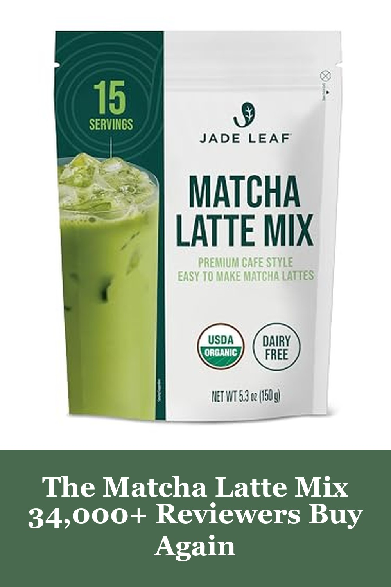
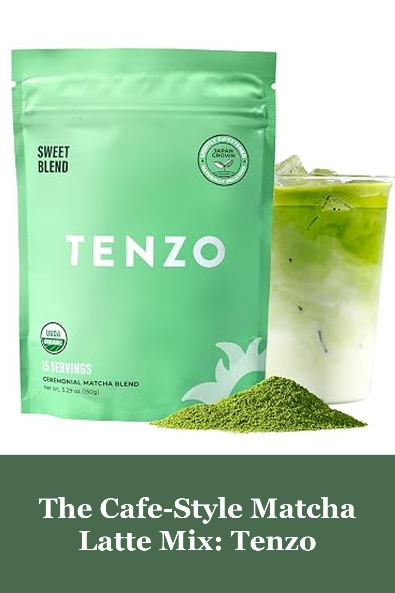
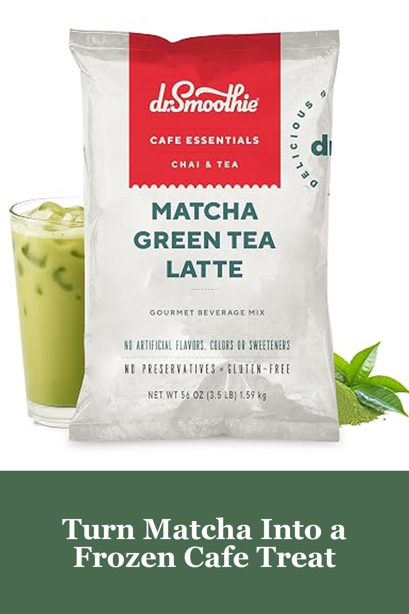

Jade Leaf Matcha Latte Mix, Original, 150g / 5.3oz
Skip the $6 coffee-shop matcha latte — this pre-sweetened blend from Jade Leaf mixes into a smooth, café-style latte with just hot water and milk, no sifting or clumping. It's one of Amazon's best-selling matcha latte mixes for a reason: over 34,000 reviewers keep coming back for it.
It mixes into a smooth, café-style latte without that gritty texture, reviewers say — it does run on the sweeter side, so if you prefer a less sweet cup, use a little less powder.— verified Amazon buyer
View on Amazon →
Tenzo Matcha Green Tea Powder, Organic Cafe Sweetened Matcha Latte Mix (5.29 Ounce)
Tenzo's barista-crafted blend is built for the daily matcha latte habit — organic, lightly sweetened, and vibrant green straight out of the bag. Reviewers compare it directly to Starbucks' matcha and say it holds its own for a fraction of the price.
It's smooth, vibrant, and dissolves without leaving any graininess, reviewers say — some who are used to a stronger, unsweetened matcha find the flavor comes through a bit softer than expected.— verified Amazon buyer
View on Amazon →
Café Essentials Matcha Green Tea Latte Frappe Mix (3.5 lb Bag, 30 Servings)
Matcha isn't just for hot lattes — blend this frappe mix with ice for a frozen, café-style treat that works in smoothies and protein shakes too. No artificial colors or flavors, and one 3.5lb bag makes about 30 servings.
One reviewer called it the best matcha latte they've tried, and it's become a go-to for frozen protein shakes — it's noticeably less dusty than other mixes, though a couple of buyers wish the matcha flavor came through stronger.— verified Amazon buyer
View on Amazon →